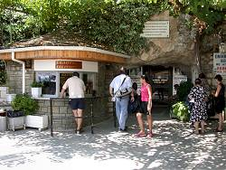
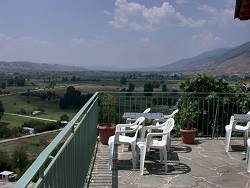

A Visit of Perama Cave
by Jochen Duckeck
 |
| Image: between Igoumenitsa and Ioannina. |
Well, there I was, in Greece for the first time. I arrived at Igoumenitsa on a camping passage, which meant I was sleeping in my oldtimer Volkswagen Joker on the ferry. Arriving in the morning I looked at the map I had drawn and identified the next cave. There it was, near Ioannina, only 90 kilometers away. After what I heard about Greek roads, I thought "about three hours". But the road was pretty good, going up and down all the time, u turn after u turn, I made my way to Ioannina in little more than two hours.
This was the easy part. When arriving at Ioannina I made my first experiences with the Greek way to place signs. On the map I saw a big red road, a broad highway leading directly to the cave. Reality was different. Mentioning I was in the middle of Ioannina and missed the turnoff, I turned around and tried again. The was no sign for Perama or the cave. A look at the map told me the first big town in my direction was Metsovo, so I looked for this name this time.
It was more or less intuition to turn right at the sign Μετσοβο. A little blue sign, hiding partly behind a tree and a parking car. There is only one road going off, so I will take what comes, I thought. Even as it was a narrow road, really unlike what I had expected. And there it was, only 30 meters behind the turn off, the sign to Perama Cave. Who said it was necessary to place signs before turnoffs? Intuition works as good! Well, nearly as good. And this way they saved one sign. If they placed it before the turnoff they would have needed one from the south and one from the north.
 |
| Image: stop here! |
After this little odyssey (wasn't Odysseus a Greek too?) I arrived at Perama. A neat crossing with a sports ground, looking like barracks, to the right and the town to the left, accidentally surrounded by some desert. From the crossing two roads led into Perama, a narrow one and a narrower one. The signs pointed to the narrower one. You remember, I have a camper van.
So I tried, not knowing how far it would be and if there would be a possibility to turn around. The road was not that narrow, I decided, but the postcard stands on both sides made it look so. And so I made my way up the road, tourist shop after tourist shop, postcards, jewelry and whatever. And then a sign STOP ΣΠΗΛΑΙΟ CAVE. Nice guess. Unfortunately there was no chance to stop. Parking prohibited on both sides of the road. A huge parking lot was completely empty, and had a big sign written in Greek. Obviously private property.
Following the road I found out some details. Perama consists of two roads, one leading uphill close to the cave and another one leading back down, both are one way. Both are narrow. Both are no parking area. Thats all.
The solution? Well a bus driver demonstrated it: he stood right in the middle of the road, where parking was obviously not forbidden.
By the way: the locals park everywhere, of course. They ignore the signs and park for hours. But as a foreigner I do not know the rules of this game. Seems rather natural that a shop owner is not friendly if I place my camper van in front of his shop. As they have no sidewalk, this could make his shop inaccessible.
|  |
| Image: the cave entrance. |
{kind=link}
For normal people, who have to leave their car alone, there is only one solution. You remember the desert around the crossing? All grass died, because people are parking all around, which makes the landscape look like dunes of mud. Fortunately there is no rain during summer. However, the walk up to the cave is only 300 meters, and a good introduction to what you must expect from the cave tour: First there is a short ascend to the cave entrance. Then the path im the cave goes up and down all the time, until at the end you climb an 50m ascend to the exit. And now you have to walk back all the way over Mt. Goritsa. All together a nice 3km walk.
Tours start pretty often, even on the calm day I was there, they started every 15 minutes. I'm not sure about the number of visitors. The numerous souvenir shops, at least 30, looked like the cave had 250,000 visitors per year. But when I was there in July, the tour had about 15 or 20 visitors and the whole village looked pretty deserted. I have no idea how the shops live on so little visitors.
I had read the description of Anna Petrocheilou in the
book Greek Caves, and
 Greece 1987
by Anne Oldham.
But my tour was a little different.
Greece 1987
by Anne Oldham.
But my tour was a little different.
 |
| Image: the formation called Mutant Cucumber From Space. |
We had a guide who made several stops and explained a lot. She talked a lot and a pretty long time, but all in Greek! After that, she asked if someone needed an English explanation. 80% of the visitors were foreign tourists from different countries expecting some explanations, and they were quite happy. But unfortunately she knew only three sentences in English and was not able to understand questions of the visitors. She more or less just appologized for not speaking English.
Every visitor gets a brochure, which is available in various languages. It contains a short cave description and the names of 19 numbered formations. They are pretty serious about that, and it seems to be very important, if a formation, looking like a pretty nice stalagmite with some cave coral is called Tower of Pisa, Virgin Mary or Mutant Cucumber From Space. My personal opinion: all three names would fit quite as well...
|  |
| Image: definitely a Cave With a View. |
{kind=link}
I took my German brochure and asked for an English one, for a friend in USA. A comparison was rather funny. The Germans get a brochure without the formation names, but a cave map instead. How did they know? However, someone couldn't believe, that Germans are more interested in maps than fancy names, made a German translation of the list and included it as an inlay.
But back to the tour. The tour was not too fast, as I did not care about the Greek explanations. I was allowed to take some pictures, which was petty important for me. The whole cave has an ugly yellow light, making anything look strange. The pictures I made gave me an impression, how the cave looked with natural light.
And the highligh of the tour was the end: leaving the cave through an adit, the visitor stands high above Perama on Mt. Goritsa. From the terrace the view to Ioannina and to the north is exceptional!